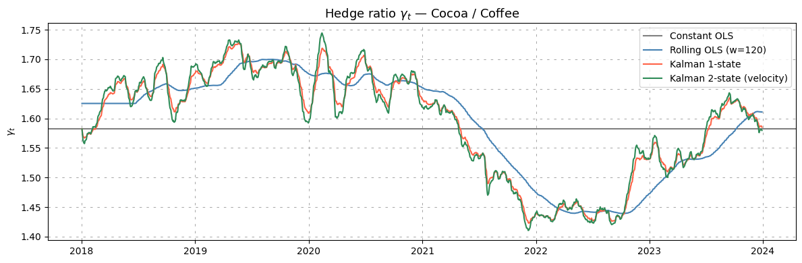
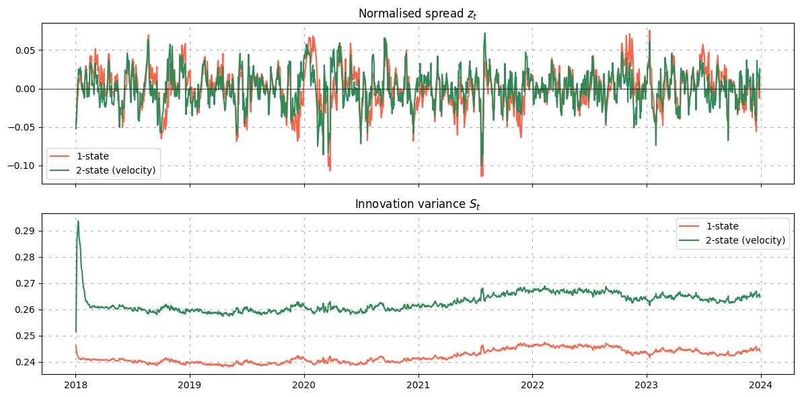
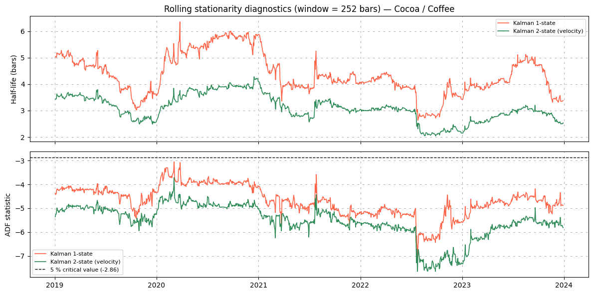

Tracking the hedge ratio with the Kalman filter#
Topics
Kalman filter · state-space model · dynamic hedge ratio · pairs trading · OLS bootstrap · lookahead bias
In pairs trading, the spread between two assets is only stationary if we subtract the right proportion of one asset from the other. That proportion, the hedge ratio \(\beta_t\), is rarely constant in practice. Structural shifts in business models, changing correlations, or regime transitions all cause the relationship to drift over time.
A constant OLS hedge ratio, estimated once on the training window, cannot adapt to these drifts.
This note derives the Kalman filter state-space model used by spreadpy for dynamic hedge ratio
estimation, following Palomar (2024), §15.6.3. Two variants are covered:
the 2-state model
KalmanFilter— tracks the intercept \(\mu_t\) and the slope \(\gamma_t\)the 3-state model
KalmanFilterWithVelocity— adds a velocity \(\dot{\gamma}_t\) to follow locally linear trends
Why not OLS?#
Given price series \((y_t, x_t)\), the simplest hedge ratio is the full-sample OLS slope:
This is optimal under stationarity. But it has two critical limitations:
Static — it cannot react to regime changes occurring after the training window.
Biased at boundaries — even rolling OLS uses a fixed window of the past and discards all older information abruptly.
Rolling OLS with window \(w\) is a middle ground:
It adapts but introduces a tuning parameter \(w\) and uses observations with equal weights, while the Kalman filter weights all observations optimally and updates the estimate one observation at a time.
The state-space model#
Observation and transition equations#
We model the joint dynamics of \((y_t, x_t)\) as a linear Gaussian state-space model. The two hidden states are the intercept \(\mu_t\) and the hedge ratio \(\gamma_t\).
Observation equation — \(y_t\) is explained by \(x_t\) through the current state:
Transition equations — the states evolve as independent random walks:
In matrix form, with state vector \(\alpha_t = [\mu_t, \gamma_t]^\top\):
At each bar \(t\) the observation matrix is \(H_t = [1,\, x_t]\), so the observation equation rewrites compactly as:
Hyperparameter initialisation (OLS bootstrap)#
The three noise variances \((\sigma^2_\varepsilon, \sigma^2_\mu, \sigma^2_\gamma)\) are not observed and must be fixed before running the filter. Following Palomar (2024), §15.6.3, we bootstrap them from an OLS fit on the first \(T_{\mathrm{ls}}\) bars:
The scalar \(\alpha \in (10^{-6}, 10^{-4})\) is the single tuning parameter: smaller values make the states adapt more slowly, larger values track changes faster but add noise.
The initial state covariance is also derived from OLS precision:
The Kalman recursion#
At each bar \(t = 1, \ldots, T\), the filter alternates between a predict step (prior before seeing \(y_t\)) and an update step (posterior after seeing \(y_t\)).
Predict:
Since \(F = I_2\), the predicted state is simply the previous filtered state — the hedge ratio is not expected to drift between bars.
Update — incorporate the new observation \(y_t\):
The Kalman gain \(K_t \in \mathbb{R}^2\) determines how much the new observation moves the state estimate. When \(\sigma^2_\varepsilon\) is large (noisy observations), \(K_t\) is small and the filter trusts the prior more. When \(\sigma^2_\gamma\) is large (fast-moving state), \(K_t\) is large and new data dominates.
Avoiding lookahead bias#
Critical point
For trading, we must use the predictive state \(\gamma_{t|t-1}\), not the filtered state \(\gamma_{t|t}\).
The filtered state \(\gamma_{t|t}\) incorporates \(y_t\) itself — if we used it to construct the spread \(s_t = y_t - \gamma_{t|t}\, x_t\), we would be using the future to explain the present.
spreadpy always returns and uses \(\gamma_{t|t-1}\).
The lookahead-free normalised spread is therefore:
The velocity extension#
Motivation#
The 2-state random-walk model assumes the hedge ratio has no directional trend — changes in \(\gamma_t\) are pure noise. When the cointegration relationship drifts persistently in one direction (e.g. a slow structural shift in business mix), the 2-state model lags behind because it cannot anticipate the direction.
The 3-state model adds a velocity \(\dot{\gamma}_t\) that lets the filter extrapolate the current trend:
This is the locally linear trend (LLT) model applied to the hedge ratio.
State equations#
The augmented state vector is \(\alpha_t = [\mu_t, \gamma_t, \dot{\gamma}_t]^\top\) and the transition matrix becomes:
The observation matrix is \(H_t = [1, x_t, 0]\), so the velocity is a latent variable that only influences \(y_t\) indirectly through \(\gamma_t\).
The predicted hedge ratio is now:
which extrapolates the last estimated trend — the filter “looks ahead” in the direction of the current drift.
Additional hyperparameter#
The velocity noise variance uses a second scale \(\alpha_{\dot{\gamma}} < \alpha\):
The inequality \(\alpha_{\dot{\gamma}} < \alpha\) ensures the velocity is slower-moving
than the hedge ratio itself: the trend is persistent but not erratic. The default in
spreadpy is \(\alpha_{\dot{\gamma}} = \alpha / 10\).
Application with spreadpy#
We illustrate the three estimators on a classic soft-commodities pair: CC=F (Cocoa futures) and KC=F (Coffee futures). Both are agricultural commodities sensitive to weather and supply-chain shocks, but their demand drivers differ enough that the relationship drifts over time.
Loading data#
import numpy as np
import yfinance as yf
from spreadpy.data import PriceTimeSeries
raw = yf.download(["CC=F", "KC=F"], start="2018-01-01", end="2024-01-01",
auto_adjust=True)["Close"].dropna()
y = PriceTimeSeries(raw["CC=F"], name="Cacoa")
x = PriceTimeSeries(raw["KC=F"], name="Coffee")
[ 0% ]
[*********************100%***********************] 2 of 2 completed
Fitting the three estimators#
from spreadpy.spread.hedgeRatio.constantOLS import ConstantOLS
from spreadpy.spread.hedgeRatio.rollingOLS import RollingOLS
from spreadpy.spread.hedgeRatio.kalmanFilter import KalmanFilter
from spreadpy.spread.hedgeRatio.kalmanFilterWithVelocity import KalmanFilterWithVelocity
ols = ConstantOLS(add_intercept=False)
rolling = RollingOLS(window=120, add_intercept=False)
kf = KalmanFilter(alpha=1e-4, add_intercept=False)
kfv = KalmanFilterWithVelocity(alpha=1e-4, alpha_dgam=1e-6, add_intercept=False)
# All estimators work on log-prices for homoscedastic residuals
y_log = PriceTimeSeries(np.log(y.series), name="log CC=F")
x_log = PriceTimeSeries(np.log(x.series), name="log KC=F")
beta_ols = ols.fit(y_log, x_log)
beta_rolling = rolling.fit(y_log, x_log)
beta_kf = kf.fit(y_log, x_log)
beta_kfv = kfv.fit(y_log, x_log)
Comparing the hedge ratios#
import matplotlib.pyplot as plt
fig, ax = plt.subplots(figsize=(12, 4))
ax.axhline(beta_ols.iloc[0], color="gray", lw=1.5, label="Constant OLS")
ax.plot(beta_rolling, color="steelblue", lw=1.5, label="Rolling OLS (w=120)")
ax.plot(beta_kf, color="tomato", lw=1.5, label="Kalman 1-state")
ax.plot(beta_kfv, color="seagreen", lw=1.5, label="Kalman 2-state (velocity)")
ax.set_title("Hedge ratio $\\gamma_t$ — Cocoa / Coffee", fontsize=13)
ax.set_ylabel("$\\gamma_t$")
ax.legend()
plt.grid(linestyle="--", dashes=(5, 10), color="gray", linewidth=0.5)
plt.tight_layout()
plt.show()

The Kalman curves adapt smoothly to structural breaks while Rolling OLS produces step-like jumps and lags by half a window.
Inspecting the normalised spread#
Both Kalman estimators expose the normalised spread \(z_t\) directly as an attribute
after fit():
fig, axes = plt.subplots(2, 1, figsize=(12, 6), sharex=True)
axes[0].plot(kf.normalized_spread_, color="tomato", label="1-state")
axes[0].plot(kfv.normalized_spread_, color="seagreen", label="2-state (velocity)")
axes[0].axhline(0, color="k", lw=0.5)
axes[0].set_title("Normalised spread $z_t$")
axes[0].legend()
axes[0].grid(linestyle="--", dashes=(5, 10), color="gray", linewidth=0.5)
axes[1].plot(kf.innovation_var_ts_, color="tomato", label="1-state")
axes[1].plot(kfv.innovation_var_ts_, color="seagreen", label="2-state (velocity)")
axes[1].set_title("Innovation variance $S_t$")
axes[1].legend()
axes[1].grid(linestyle="--", dashes=(5, 10), color="gray", linewidth=0.5)
plt.tight_layout()
plt.show()

A widening \(S_t\) signals that the filter is uncertain — the model and the data are temporarily inconsistent. This often coincides with news events or regime changes.
Stationarity diagnostics#
from spreadpy.spread import SpreadSeries
# Build the spread series (in log-price space) with the KF hedge ratio
spread_kf = SpreadSeries(y_log, x_log, beta_kf, estimator_name="KalmanFilter")
spread_kfv = SpreadSeries(y_log, x_log, beta_kfv, estimator_name="KalmanFilterVelocity")
hl = spread_kf.half_life()
stat, pval = spread_kf.adf_statistic()
print("For Kalman filter:")
print(f"Half-life : {hl:.1f} bars")
print(f"ADF stat : {stat:.3f} (p = {pval:.4f})")
hlv = spread_kfv.half_life()
statv, pvalv = spread_kfv.adf_statistic()
print("\nFor Kalman filter with velocity:")
print(f"Half-life : {hlv:.1f} bars")
print(f"ADF stat : {statv:.3f} (p = {pvalv:.4f})")
For Kalman filter:
Half-life : 4.3 bars
ADF stat : -11.511 (p = 0.0000)
For Kalman filter with velocity:
Half-life : 3.1 bars
ADF stat : -9.586 (p = 0.0000)
A short half-life (say, 20–60 bars for daily data) and a p-value below 0.05 suggest that the Kalman-filtered spread is mean-reverting and suitable for z-score signal generation.
The full-sample statistics give a single answer, but the spread around early 2020 shows a clear structural break. It is more informative to track stationarity continuously with a rolling ADF test.
import numpy as np
import pandas as pd
from statsmodels.tsa.stattools import adfuller
ROLL = 252
def rolling_diagnostics(spread, roll):
residuals = spread.residuals.dropna()
delta = residuals.diff().dropna()
lagged = residuals.shift(1).dropna()
stats, half_lives, idx = [], [], []
for i in range(roll, len(residuals)):
res = adfuller(residuals.iloc[i - roll : i], maxlag=1, autolag=None)
s_lag = lagged.iloc[i - roll : i].values
ds = delta.iloc[i - roll : i].values
b = np.dot(s_lag, ds) / np.dot(s_lag, s_lag)
stats.append(res[0])
half_lives.append(-np.log(2) / b if b < 0 else np.nan)
idx.append(residuals.index[i])
return pd.Series(stats, index=idx), pd.Series(half_lives, index=idx)
roll_stat, roll_hl = rolling_diagnostics(spread_kf, ROLL)
roll_stat_v, roll_hl_v = rolling_diagnostics(spread_kfv, ROLL)
cv_5pct = -2.86
fig, axes = plt.subplots(2, 1, figsize=(12, 6), sharex=True)
# Panel 1 — rolling half-life
axes[0].plot(roll_hl, color="tomato", lw=1.2, label="Kalman 1-state")
axes[0].plot(roll_hl_v, color="seagreen", lw=1.2, label="Kalman 2-state (velocity)")
axes[0].set_ylabel("Half-life (bars)")
axes[0].legend(fontsize=8)
axes[0].set_title(f"Rolling stationarity diagnostics (window = {ROLL} bars) — Cocoa / Coffee")
axes[0].grid(linestyle="--", dashes=(5, 10), color="gray", linewidth=0.5)
# Panel 2 — rolling ADF statistic
axes[1].plot(roll_stat, color="tomato", lw=1.2, label="Kalman 1-state")
axes[1].plot(roll_stat_v, color="seagreen", lw=1.2, label="Kalman 2-state (velocity)")
axes[1].axhline(cv_5pct, color="black", lw=1.0, linestyle="--",
label=f"5 % critical value ({cv_5pct})")
axes[1].fill_between(roll_stat.index, roll_stat, cv_5pct,
where=(roll_stat > cv_5pct), alpha=0.12, color="tomato")
axes[1].fill_between(roll_stat_v.index, roll_stat_v, cv_5pct,
where=(roll_stat_v > cv_5pct), alpha=0.12, color="seagreen")
axes[1].set_ylabel("ADF statistic")
axes[1].legend(fontsize=8)
axes[1].grid(linestyle="--", dashes=(5, 10), color="gray", linewidth=0.5)
plt.tight_layout()
plt.show()

The red zones in the ADF panel highlight periods where the spread temporarily loses its mean-reverting property. A rising half-life confirms the same story from a different angle: the spread reverts more slowly when the relationship is under stress. Any structural break visible in the plots reflects supply or demand shocks specific to cocoa or coffee markets — droughts, disease, or geopolitical disruptions — pushing the relationship out of its historical range for extended periods. This kind of diagnostic is useful for gating the signal: one can suspend trading whenever the ADF statistic rises above its critical value.
Choosing between the two models#
2-state |
3-state |
|
|---|---|---|
Transition |
Random walk on \(\gamma_t\) |
Locally linear trend |
Best for |
Stationary relationship with occasional jumps |
Slow, persistent drifts |
Risk of |
Under-reacting to trends |
Over-fitting to transient moves |
Key param |
\(\alpha \in [10^{-6}, 10^{-4}]\) |
\(\alpha\), \(\alpha_{\dot\gamma} = \alpha/10\) |
Palomar recommendation |
\(\alpha = 10^{-5}\) |
\(\alpha = 10^{-6}\) |
Practical advice
Use the 2-state model as the default. Switch to the 3-state model only if inspection of \(\gamma_t\) shows a persistent directional drift that the 2-state model cannot track without raising \(\alpha\) to a level that makes the spread too noisy.
In both cases, always use log-prices — the constant-noise assumption \(\sigma^2_\varepsilon = \mathrm{const}\) breaks down on raw prices where \(\sigma^2_\varepsilon \propto \text{price}^2\).
References#
Palomar, D. P. (2024). Portfolio Optimization: Theory and Application. Cambridge University Press. §15.6 — Kalman filter for pairs trading. Online version
Kalman, R. E. (1960). A new approach to linear filtering and prediction problems. Journal of Basic Engineering, 82(1), 35–45.
Pole, A. (2007). Statistical Arbitrage: Algorithmic Trading Insights and Techniques. Wiley Finance.